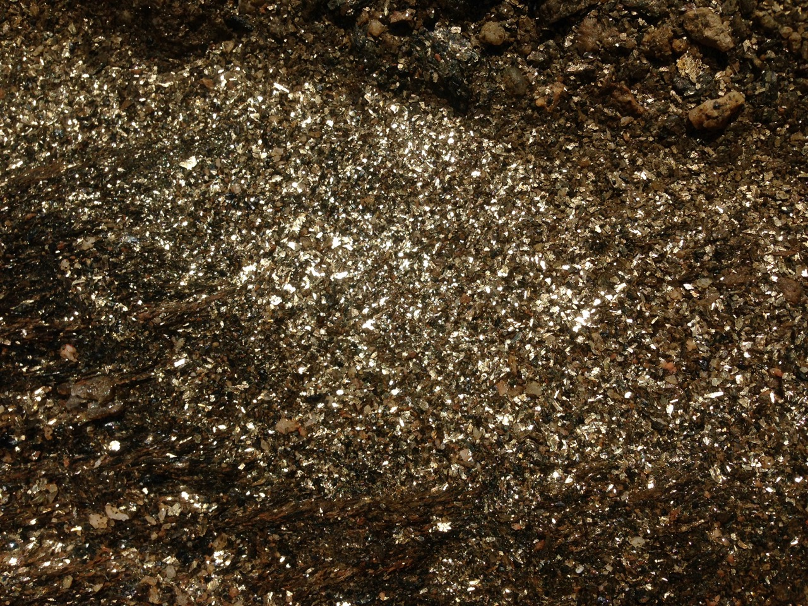

The aim of the Education and Outreach side of Cridhe Crois Shlighe is to empower disadvantaged / marginalised
groups and young people in developing a voice through creativity. A broader aim is to bring an experience of the
arts to parts of the community who may not usually engage with the work that Taigh Chearsabhagh does.
We achieve these aims through art workshops, collaborations with local organisations, and by bringing elements of our exhibitions program
to the community. The fortnightly art classes with Caraidean Uibhist are popular with their service users, and
feedback suggests that these opportunities for creative expression are making a difference to their lives.
The service users are also encouraged to keep a sketchbook between sessions which has been a great way of
boosting confidence in their creativity.
The Arts Education and Outreach role also supports the Digital Skills and Art Therapy services through creative collaboration.
